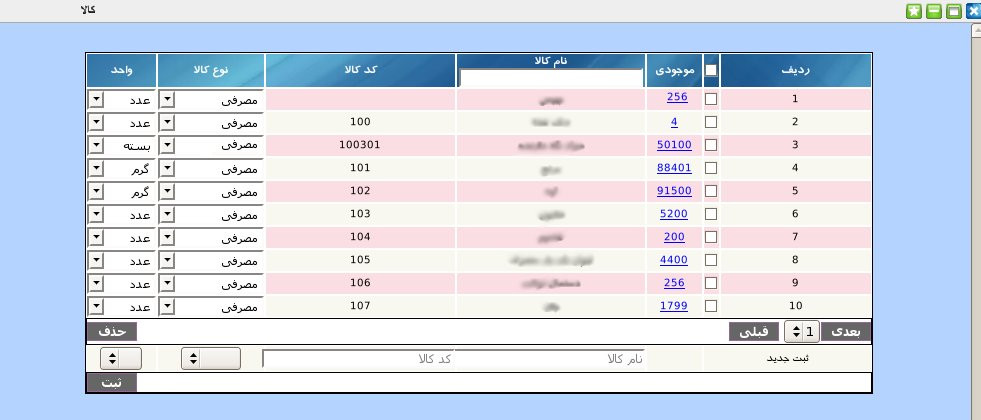
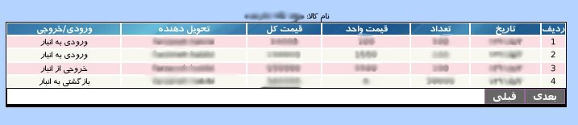

۱-کالا
پنل مدیریت کالا یک پنل مدیریتی است که در آن می توان کالای جدیدی به کالاهای مجموعه اضافه نمود و یا کالای موجود را ویرایش و یا حذف نمود. این پنل شامل تعداد موجودی کالا, نام کالا, کد کالا, نوع کالا و واحد آن می باشد.

برای ثبت کالا جدیدمی توانید از قسمت پایین پنل نام و کد کالا را وارد نموده و نوع و واحد کالا را از منو انتخاب و در انتها دکمه ثبت را کلیک نمایید.
برای جستجوی یک کالای خاص می توانید در کادر بالای ستون نام کالا, نام کالای مورد نظر را وارد و سپس کلید Enter را بزنید.
برای مشاهده ی گزارش تمامی ورود و خروج های یک کالای خاص به انبار می توانید بر روی لینک موجود در ستون موجودی کلیک نمایید.

در این صفحه گزارش کاملی از تاریخ هر ورودی و خروجی, تعدادکالا در هر ورودی و خروجی, قیمت واحد و قیمت کل و همچنین تحویل دهنده ی کالا را مشاهده می نمایید.
جهت ویرایش مقادیر هر آیتم بر روی آن کلیک نمایید و پس از تصحیح کلید Enter را بزنید.
جهت حذف تکی هر آیتم, موس خود را بر روی شماره ردیف آیتم برده و بر روی لینک حذف کلیک نمایید.
جهت حذف گروهی آیتم ها, آیتم های مورد نظر را انتخاب و بر روی دکمه حذف کلیک نمایید.